Endo根管治療
抜歯を避けるために～根管治療～
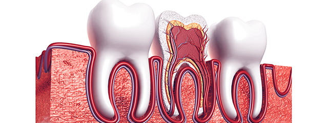
虫歯は歯の表面から少しずつ内部に進んでいきます。虫歯の汚染が歯の中の神経にまでおよんでしまうと、虫歯部分を削る治療だけでは治癒が不可能になってしまうでしょう。
そこまで悪化した場合、以前は痛みをすぐに抑えられる抜歯が選択されていましたが、永久歯はいったん抜いてしまうと元には戻せません。さらに、歯を1本でも失ってしまうと口腔内の噛み合わせのバランスがくずれ、お口全体の健康をおびやかすことにもつながってしまいます
千葉県南柏の歯医者「さかいね歯科クリニック」では、重度の虫歯を抜かずに残すための「根管治療（こんかんちりょう）」をご提供しているのが強みです。虫歯に悩み、抜歯を考えているようなら、その前にご相談ください。
歯を根から治す根管治療
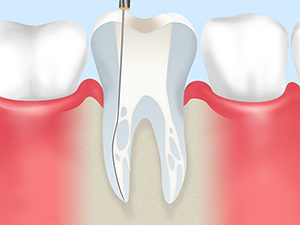
歯の神経にまで虫歯菌の汚染が達してしまった場合の治療を、「根管治療」といいます。歯根の中にある根管という細い管の中から、虫歯菌に冒された歯の神経や血管などの汚染歯質を除去。歯根内を洗浄・消毒したうえで、細菌が入り込まないようにすき間なく薬剤を詰めるのが、根管治療の内容です。
根管治療の際には、根管から汚染された神経や歯質を残らず除去しなければ、再発のリスクを負います。根管は細いうえに複雑な形状をしているため、再治療を避けるためには丁寧な精密治療が必要です。根管治療後は土台を立て、セラミックなどでつくられた補綴物を装着して、歯の機能を回復させます。
根管治療から被せ物装着までの流れ
※表は左右にスクロールして確認することができます。
| STEP1 | STEP2 | STEP3 | STEP4 | STEP5 |
|---|---|---|---|---|
|
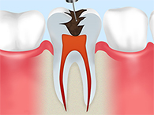 数回にわたり根管内の汚染組織を除去します。 |
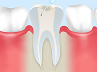 根管内の洗浄・消毒を行います。 |
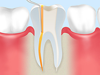 根管内にすき間なく薬剤を満たします。 |
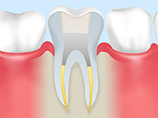 被せ物を装着するための土台をつくります。 |
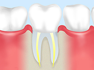 被せ物を装着します。 |
当院で行う根管治療の特徴
おすすめの充填剤「MTAセメント」
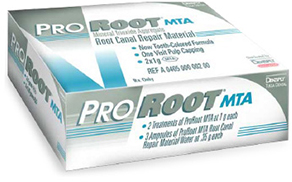
根管治療では根管内の汚染組織を取り除いた後、すき間ができないように薬剤でふさぐ「根管充填」が必要です。この際にすき間を残してしまうと、再発・再治療のリスクが高まってしまうため、丁寧に処置しなければなりません。
保険診療の根管充填で一般的に使用されるのは「ガッタパーチャ」という充填剤です。ただし、この充填剤はゴムのような素材であり、細く複雑な根管内をすき間なく埋めるのがとても大変な治療になるのは間違いありません。それに対して、当院がおすすめする「MTAセメント」は、扱いやすいうえに殺菌作用があり、高い接着性や歯の組織の再生を促す効果もあります。
根管治療を成功させるためには、「封鎖性と適合性の高さ」「歯の再石灰化の促進効果」が重要であり、だからこそMTAセメントがおすすめなのです。
バーティカル法を採用
根管充填の方法には、大きく分けて2種類あります。側方から加圧して充填する「側方加圧充填（ラテラル法）」と、垂直に押し込んでいく「垂直加圧充填（バーティカル法）」です。
| ラテラル法 | バーティカル法 |
|---|---|
|
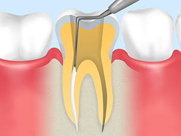 歯根の先端まで薬剤を垂直に押し込んでいく充填方法です。すき間なく充填しやすいため、再感染を起こしにくくなります。 |
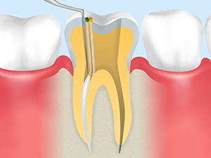 根管の長さを測定し、その長さに合わせて薬剤を注入。専用器具で横向きに圧接する充填方法です。高い技術が必要になりますが、技術を習得すれば比較的簡単かつ確実に充填できます。 |
さかいね歯科クリニックでは、バーティカル法を採用しています。高い技術と豊富な経験がなければ難しい方法ですが、根管治療の成功率を高めるだけでなく、再発防止につながるのがメリットです。
残念ながら抜歯となるケース
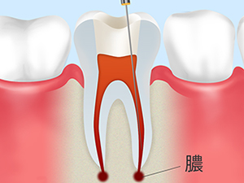
永久歯は一度抜いてしまうと、二度と生えてはきません。そのため、歯はできるだけ削ったり抜歯したりせず、少しでも残す努力をしていくのが基本です。しかし、それでも抜歯が選択されるケースはあります。それは、「重度の虫歯で根管治療を行っても歯根を残せない」「歯根の先にうみがたまる根尖病巣（こんせんびょうそう）ができ、激しく痛む」などの場合です。
ほかにも、歯を残しておくことでまわりの歯や歯列に悪影響をおよぼす場合は、抜歯が選択されます。具体的には、「重度の歯周病にかかっている歯」「破折している歯」「不正な噛み合わせの歯」「痛んだり歯列を乱したりする親しらず」などがある場合には、抜歯を覚悟しなければなりません。
抜歯を行った後は、となりの歯を削り支台として、連結した人工歯を装着する「ブリッジ治療」や、取り外し可能な「入れ歯治療」、人工歯根を埋め込む「インプラント治療」などを行って、歯の機能を回復させます。当院では患者さん一人ひとりに合った治療法をご提案しますので、お気軽にご相談ください。